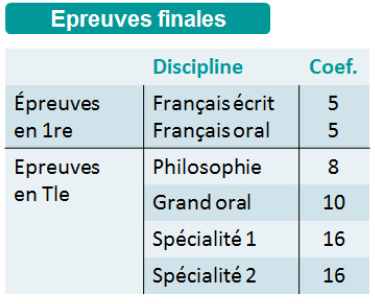
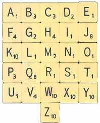
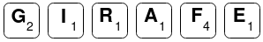

C5 Dictionnaires ¶
Introduction¶
On rappelle que pour une liste de Python, les valeurs sont accessibles par l'intermédiaire de leur indice. Par exemple les éléments de la liste prenoms = ['Marie', 'Paul', 'Julie', 'Tom', 'Alice'] sont accessibles via les indices 0, 1, 2, 3, 4 comme illustré ci-dessous :
| Elements | 'Marie' | 'Paul' | 'Julie' | 'Tom' | 'Alice' |
|---|---|---|---|---|---|
| Indice | 0 | 1 | 2 | 3 | 4 |
Un dictionnaire de Python est similaire à une liste mais les éléments appelées valeurs sont reperés par des clés. Un dictionnaire est donc comparable à un tableau associatif de clés et de valeurs, chaque clé (unique) étant associé à une valeur. Prenons un premier exemple, un dictionnaire permettant d'associer des clés (des prenoms) à des valeurs à une adresse mail :
| Clés | 'Marie' | 'Paul' | 'Tom' |
|---|---|---|---|
| Valeurs | 'marie@toto.com' | 'paul@truc.net' | 'tom@bidule.org' |
Pour créer ce dictionnaire en Python, on utilise la syntaxe suivante :
adresses = {'Marie' : 'marie@toto.com', 'Paul' : 'paul@truc.net', 'Tom' : 'tom@bidule.org'}
c'est-à-dire :
- On liste entre accolades
{}et séparés par des virgules,les paires clés/valeurs - Les deux éléments d'une même paire sont séparés par le caractère
:
Opération de bases sur un dictionnaires¶
- Affichage :
Pour afficher la totalité des paires d'un dictionnaire, on utilise l'instructionprint -
Accès à une valeur :
Pour accéder aux valeurs de ce dictionnaire, on utilise une syntaxe similaire à celle des listes, mais on donne la clé entre crochets ([et]) et pas l'indice. Par exemple l'adresse mail de'Paul's'obtient avecadresses['Paul'].Note
Tenter d'accéder à une valeur via une clé inexistante produit une erreur
KeyError -
Modifier une valeur :
Pour modifier une valeur dans un dictionnaire, on utilise l'affectation=. Par exemple pour modifier l'adresse de Tom :adresses['Tom'] = tom@mel.org - Supprimer une valeur :
Pour supprimer une paire d'un dictionnaire on utilise l'instruction
del. Par exemple pour supprimerdel adresses['Marie']supprimera la paire'Marie' : 'marie@toto.com'du dictionnairesadresses
A retenir
- Un dictionnaire permet de stocker des données sous la forme d'associations clés/valeurs
- Pour créer un dictionnaire, on utilise la syntaxe :
mon_dico = {cle1 : valeur1, cle2 : valeur2, cle3:valeur3, ...}. Un dictionnaire vide s'obtient avec{}. - On accède à une valeur par sa clé avec la syntaxe
mon_dico[cle], si la clé n'existe on obtient l'erreurKeyError - On modifie une valeur existante ou créer une nouvelle association clé/valeur avec une affectation de la forme
mon_dico[cle] = nouvelle_valeur - On peut supprimer un couple clé/valeur avec
del mon_dico[cle]
 Exercice 1 : Créer et manipuler un dictionnaire¶
Exercice 1 : Créer et manipuler un dictionnaire¶
- Créer un dictionnaire
coefficientpermettant d'associer à chaque épreuve finale du bac son coefficient (voir tableau ci-dessous) :
- Ecrire une instruction
printpermettant d'afficher le coefficient du'Grand oral'. - Quelle instruction permet de modifier le coefficient de la philosophie en 9 ?
- Quelle instruction permet de rajouter l'épreuve
'Option'avec un coefficient 2 ? - Quelle instruction permet de supprimer l'épreuve
'Option'crée ci-dessus ?
Test d'appartenance à un dictionnaire¶
On peut tester si une clé existe ou non dans un dictionnaire avec <cle> in <dico> qui renverra true si <cle> est une clé présente dans <dico> et <false> sinon.
Note
On peut aussi utiliser in sur les listes pour y tester la présence d'un élément par exemple 2 in [1, 9, 4] renvoie false. Pour des raisons qui seront détaillées plus loin dans le cours, on limitera volontairement l'utilisation du in aux dictionnaires et on l'évitera sur les listes.
Exercice 2 : Dictionnaire des nombres d'occurrences¶
Ecrire une fonction dico_occurrence qui prend en entrée une chaîne de caractères s et renvoie un dictionnaire dont les clés sont les caractères présents dans s et les valeurs leurs nombres d'occurrences. Par exemple, dico_occurrence("Bonjour") doit renvoyer le dictionnaire {'B' : 1, 'o':2, 'n':1, 'j':1, 'u':1, 'r':1} car tous les caractères apparaissent une fois sauf o qui apparaît deux fois.
Indices
- Créer un dictionnaire vide
- Parcourir la chaine
scaractère par caractère - Si le caractère est déjà présent dans le dictionnaire incrémenter son nombre d'occurrence, sinon l'ajouter au dictionnaire avec une occurrence de 1.
Parcourir un dictionnaire¶
On peut parcourir un dicionnaire par clés ou par valeurs et la syntaxe est similaire à celle déjà rencontrée sur les autres itérables (chaines de caractères, tuples, listes) : on utilise une boucle for <cle> in <dico>. Par exemple, dans la boucle for c in {"A":6, "T":12, "C":9, "G":14} la variable c prendra les valeurs "A", "T", "C" et "G".
Exercice 3 : Valeur d'un mot au Scrable¶
Au jeu du Scrabble, chaque lettre a une valeur comme indiqué sur l'image ci-dessous :

Le but de l'exercice est d'écrire une fonction score qui prend un argument un mot et renvoie la somme des valeurs des lettres de ce mot. Par exemple valeur("GIRAFE") doit renvoyer 10 en effet :

et donc la valeur est \(2+1+1+1+4+1 = 10\)-
Compléter une première version de
scorequi parcours les lettres du mots et ajoute la valeur suivant la lettre rencontrée. -
Les dictionnaires à la rescousse
-
Créer un dictionnaire
valeurdont les clés sont les lettres de l'alphabet et qui associe à chaque lettre sa valeur. -
Utiliser ce dictionnaire afin d'écrire une version bien plus courte et lisible de la fonction
score.
-
Dictionnaires et mutabilité¶
Les dictionnaires sont des structures de données mutables de Python, on retrouve donc les deux conséquences déjà observées sur les listes, à savoir :
-
lorsqu'on on crée un dictionnaire avec l'opérateur
=à partir d'un dictionnaire existant, toute modification de l'un entraine une modification de l'autre :###(Dés-)Active le code après la ligne# Tests(insensible à la casse)
(Ctrl+I)Entrer ou sortir du mode "deux colonnes"
(Alt+: ; Ctrl pour inverser les colonnes)Entrer ou sortir du mode "plein écran"
(Esc)Tronquer ou non le feedback dans les terminaux (sortie standard & stacktrace / relancer le code pour appliquer)Si activé, le texte copié dans le terminal est joint sur une seule ligne avant d'être copié dans le presse-papierPour crée une "vraie" copie d'un dictionnaire
dico, on peut utiliserdico.copy(). Par exemple, ci-dessus, on écrira ligne 2dico2 = dico1.copy(). Les modifications apportées à la copie ne se répèteront pas sur l'original (et inversement) -
lorsqu'on passe un dictionnaire à une fonction, tout modification effectuée dans la fonction modifie effectivement le dictionnaire
###(Dés-)Active le code après la ligne# Tests(insensible à la casse)
(Ctrl+I)Entrer ou sortir du mode "deux colonnes"
(Alt+: ; Ctrl pour inverser les colonnes)Entrer ou sortir du mode "plein écran"
(Esc)Tronquer ou non le feedback dans les terminaux (sortie standard & stacktrace / relancer le code pour appliquer)Si activé, le texte copié dans le terminal est joint sur une seule ligne avant d'être copié dans le presse-papier
D'autre part, les clés d'un dictionnaires doivent nécessairement être non mutables, donc les listes par exemple ne peuvent pas être clés d'un dictionnaire, une tentative en ce sens, déclenche un TypeError.
Exercices de synthèse¶
Exercice 4 : Moyennes des élèves¶
Voici un dictionnaire contenant les notes obtenus par des élèves :
notes = {
"Albert" : [7, 11, 15, 8, 9],
"Alice" : [14, 11, 6, 15],
"Bob" : [9, 9, 13, 14, 9],
"Louise" : [11, 13, 12, 14, 14],
"Michelle" : [2, 5, 4, 9],
"Luc" : [18, 14, 18, 11]
}
-
Ecrire une fonction moyenne qui prend en argument une liste non vide d'entiers et renvoie la moyenne des éléments de cette liste.
-
Créer un dictionnaire possédant les mêmes clés (les prénoms) et contenant la moyenne de chaque élève.
Exercice 5 : Codage et décodage¶
Le dictionnaire suivant représente un code, les clés sont les lettres de l'alphabet (en majuscule) et les valeurs sont les lettres par lesquelles les remplacer pour effectuer le codage :
code = {'A': 'Y', 'B': 'S', 'C': 'B', 'D': 'I', 'E': 'T',
'F': 'Q', 'G': 'N', 'H': 'U', 'I': 'X', 'J': 'F',
'K': 'C', 'L': 'W', 'M': 'K', 'N': 'H', 'O': 'E',
'P': 'G', 'Q': 'O', 'R': 'P', 'S': 'L', 'T': 'M',
'U': 'A', 'V': 'J', 'W': 'Z', 'X': 'V', 'Y': 'R',
'Z': 'D'}
FACILE est : QYBXWT (en effet la clé F est associée à la valeur Q, la clé A à la valeur Y, ...)
-
Ecrire une fonction qui prend en entrée une chaine de caractère et renvoie son codage. Si des caractères autres que des lettres majuscules sont présentes dans la chaine (ponctuation, espace, ...) ils sont laissées intactes. Tester votre fonction en déterminant le codage de la phrase
C'EST VRAIMENT SUPER DE FAIRE DU PYTHON !. Tester votre réponse dans le formulaire suivant :

-
Créer un dictionnaire
decodequi "inverse" le dictionnairecodec'est-à-dire que la valeur associée àYestA, celle associée àBestS, ... -
Ecrire une fonction qui prend en entrée une chaine de caractère et renvoie son décodage. Tester votre fonction en décodant le message suivant :
LAGTP ! JEAL YJTD PTALLX W'TVTPBXBT.
Exercice 6 : A la recherche du mot caché¶
Vous pouvez télécharger ci-dessous un fichier mot_cache.txt :
mot_cache.txt
ce fichier contient de nombreux caractères : tous ceux de code ascii compris entre 33 (!) et 126 (~). Tous ces caractères apparaissent au moins à 50 reprises (et jusqu'à 100 fois) à l'exception de quelques uns qui apparaissent rarement (moins d'une dizaine de fois).
Retrouver les caractères qui apparaissent rarement, ranger les dans l'ordre de leur nombre d'apparition pour obtenir le mot caché. Vous pouvez vérifier votre résultat ci-dessous :
Aide
- Revoir si nécessaire comment ouvrir un fichier en Python et en lire le contenu.
- On pourra construire un dictionnaire dont les clés sont les caractères et les valeurs leur nombre d'apparition.
Exercice 7 : S'entrainer sur CodEx¶
Quelques exercices CodEx pour s'entrainer sur les dictionnaire :
# Tests(insensible à la casse)(Ctrl+I)
(Alt+: ; Ctrl pour inverser les colonnes)
(Esc)